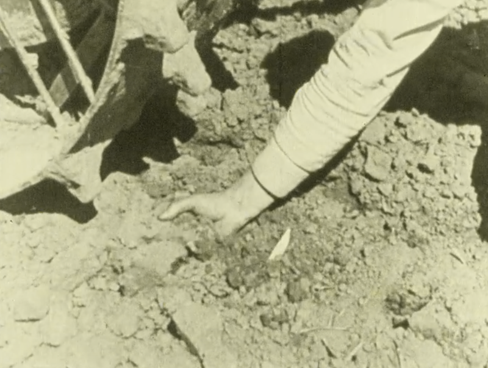

Elisa Pieper

Locate
Question 2: Process 1
Where are your feelings.
Locate them.
Do not analyse. Locate.
After the landscape
Ausstellung, Protest Landscape, Extraktion.
Life / non-life
Povinelli, geontopower.
Intimate geology
Verkalktes Myom, body horror, reproductive interruption.
Queer Time and ancestry
Rocks as parents of soil, stone as kin.
we should know something about them.
1. Locate
Question 2: Process 1
Where are your feelings. Locate them. Do not analyse. Locate.
Sind sie in deinem Rachen, wo die Worte sich wie Sedimente ablagern. Sind sie in der Magengrube, wo die Furcht verwahrt wird, ohne benannt zu werden. Ist es in der Brust, wo die Panik sich selbst messbar macht: erhöhter Puls. Befinden sie sich möglicherweise viel tiefer. Im Becken, kalzifiziert, in schwellendem Gewebe. Gefühle werden wie ein Dunst dargestellt, ein Dunst der sich verzieht. Eine Stimmung, eine Stimme, die verklingt. Ein Gefühl zu verorten bedeutet, es in Materie zu übersetzen. Gefühle wandern nicht körperlos. Sie setzen sich fest, drücken, behindern, verhärten sich. Sobald der Körper als Ort der Ablagerung verstanden wird, kann die Landschaft nicht länger bloße Kulisse sein. Auch sie ist ein Körper, unter dessen Oberfläche sich Geschichte(n) ansammeln, verdichten und zu lebendiger Materie werden.
2. After the landscape
In Close the Hole wird Landschaft nicht auf die Funktion eines reinen Ausblicks reduziert. Kein Hügel oder Berg erscheint arglos genug, um bloß malerisch anzumuten. Die Arbeit von Daniella Mooney beginnt, wo das Romantische, das Pittoreske scheitert. Es ist der Punkt, an dem Landschaft nicht mehr mit kontemplativer Distanz gedacht werden kann. Sie ist untrennbar verbunden mit Rohstoffgewinnung, durchzogen von Schächten und Tunneln, aufgewühlt von Sprengungen, unterwandert von der kolonialen Logik von Wert und Territorium. Daniella malt “protest landscapes”, wie David Gissen es bezeichnet: Landschaft nicht als Rückzug, sondern als Ort der Sichtbarmachung von Geschichte(n). Der Fels ist keine Kulisse mehr, er ist lebendige Materie. Das ist die Herausforderung: Landschaft zu malen ohne sie in einer leblosen Unverdorbenheit darzustellen und vielmehr zu fragen, was sie zu bezeugen hat.
3. Life / non-life
“Geontopower”, ein Konzept der Anthropologin Elizabeth Povinelli, bezeichnet eine Machttechnik, die älter und gleichzeitig aktueller als Regulierung und Optimierung des Lebens (biopower) ist. Über die Disziplinierung der Körper hinaus wird auch die Unterscheidung zwischen Leben und Nicht-Leben verwaltet und überwacht. Was als lebendig und schützenswert gilt sind keine neutralen Definitionen, es sind Machtoperationen. Die Arbeiten in Close the Hole setzen dieser Unterscheidung so lange zu, bis sie bricht. Gestein ist nicht mehr nur tote Materie. Wenn die Erde als leblose Ressource behandelt wird, kann sie extrahiert werden. Genauso wie einige menschliche Machtsysteme darüber entscheiden wollen, welche Körper lebendig und fortpflanzungsfähig sind und welche entbehrlich werden. Es ist ein Gefecht um die Grenzen zwischen Bios und Geos. Die Darstellung der Landschaft bei Daniella Mooney verhandeln diese Grenzen ohne sie gegeneinander auszuspielen. Leben und Materie werden in ihrer Verflochtenheit dargestellt. Ebenso wie die Gewalt, die nötig ist, um vorzutäuschen, dass Leben und Nicht-Leben jemals getrennt gewesen wären.
4. Intimate geology
Was sich in der Landschaft zeigt, taucht im Körper in Form einer intimen Geologie wieder auf. Ein verkalktes Myom. Es ist eine Wucherung im Uterus. Im Inneren der Wucherung befindet sich bereits gesteinsähnliches Material. Eine Sedimentation der Zeit in einem reproduktiven Körper? Kalzifizierung genannt. Etwas hat aufgehört zu zirkulieren. Das Blut nährt nicht mehr. Das Gewebe bleibt nicht weich, wird steinähnlich: eine Krypta im potentiellen Mutterleib. Der Bodyhorror beginnt hier weder als Spektakel noch als Schockeffekt. Er beginnt in der Erkenntnis, dass selbst der Körper geologisch ist. Er beherbergt Formen, die weder ganz lebendig noch ganz tot sind. Kein Wachstum, kein Überrest. Keine Zukunft, keine reine Ruine. Stellen wir uns vor, dass der verkalkte Tumor wie eine stumme Uhr tickt. Eine Markierung auf der verkörperten geologischen Zeitskala, die die Geschichte von Fortpflanzung und Familie unterbricht.
5. Queer Time and Ancestry
Erde entsteht durch Zersetzung, durch das endlose Wirken der Zeit. Gestein und Zeit sind die Erzeuger, und wie die Landschaft bieten sie uns eine alternative Genealogie an: keine Abstammungslinien, vielmehr Sedimentation. Kein Erbe durch Fortpflanzung, vielmehr Relation durch Erosion und Beständigkeit. Wie die queere Zeit folgt diese Genealogie nicht der Zeitachse von Heirat-Geburt-Tod. Sie ist fragmentierter und unterbrochen, sie kehrt um. Das verkalkte Myom gehört zu dieser Zeit, wie die im Flussbett gefundenen Steine in Form einer Kartoffel oder eines Herzens. Alles potenzielle Puzzleteile einer Verwandtschaft. Stein wird zu einem Verwandten, nicht unbedingt aufgrund seines tröstenden Gewichts in der Hand, sondern wegen seines Bestands. Er bleibt und begleitet. Er überdauert die Lebensform, die sich als von ihm getrennt versteht.
1. Locate
Question 2: Process 1
Where are your feelings. Locate them. Do not analyse. Locate.
Are they in your throat, where words settle like sediment. Are they in the pit of your stomach, where fear is kept without being named. Is it in the chest, where panic makes itself measurable: elevated pulse. Might they be much deeper. In the pelvis, calcified, in swelling tissue. Feelings are depicted like a haze, a haze that lifts. A mood fading away. To locate a feeling means to translate it into matter. Feelings do not move about bodiless. They settle, press, obstruct, harden. Once the body is understood as a site of deposition, landscape can no longer remain mere backdrop. It, too, is a body, beneath whose surface histories accumulate, condense, and become living matter.
2. After the landscape
In Close the Hole, landscape is not reduced to the function of a beautiful view. No hill or mountain appears innocent enough to seem simply idyllic. Daniella Mooney’s work begins where the Romantic, the picturesque, fails. It is the point at which landscape can no longer be thought through contemplative distance. It is inseparably bound up with resource extraction, threaded through with shafts and tunnels, churned up by blasting, undermined by the colonial logic of value and territory. Daniella paints “protest landscapes,” as David Gissen calls them: landscape not as retreat, but as a site where history becomes visible. Rock is no longer a backdrop; it is living matter. That is the challenge: to paint landscape without rendering it in a lifeless innocence, and instead to ask what it has to bear witness to.
3. Life / non-life
“Geontopower,” a concept developed by the anthropologist Elizabeth Povinelli, names a technique of power that is older and at the same time more current than the regulation and optimization of life (biopower). Beyond the disciplining of bodies, the distinction between life and non-life is also administered and monitored. What counts as living and worthy of protection are not neutral definitions; they are operations of power. The works in Close the Hole put pressure on this distinction until it breaks. Rock is no longer simply dead matter. If the earth is treated as a lifeless resource, it can be extracted. Just as some human systems of power seek to decide which bodies are living and capable of reproduction, and which may become expendable. It is a struggle over the boundaries between bios and geos. Daniella Mooney’s depictions of landscape negotiate these boundaries without playing them off against one another. Life and matter are shown in their entanglement. As is the violence required to pretend that life and non-life had ever been separate.
4. Intimate geology
What shows itself in the landscape reappears in the body in the form of an intimate geology. A calcified myoma. It is a growth in the uterus. Inside the growth there is already stone-like material. A sedimentation of time in a reproductive body? Called calcification. Something has stopped circulating. The blood no longer nourishes. The tissue does not remain soft. It becomes stone-like: a crypt in the potential womb. Body horror begins here neither as spectacle nor as shock effect. It begins in the realization that the body itself is geological. It harbors forms that are neither fully alive nor fully dead. No growth, no remainder. No future, no pure ruin. Let us imagine the calcified tumor ticking like a mute clock. A marker on the embodied geological timescale, one that interrupts the story of reproduction and family.
5. Queer Time and Ancestry
Earth comes into being through decomposition, through the endless working of time. Rock and time are the progenitors, and like landscape they offer us an alternative genealogy: no lines of descent, but sedimentation. No inheritance through reproduction, but relation through erosion and endurance. Like queer time, this genealogy does not follow the axis of marriage-birth-death. It is more fragmented and interrupted; it turns back on itself. The calcified myoma belongs to this time, like the stones found in the riverbed in the shape of a potato or a heart. All of them potential puzzle pieces of a kinship. Stone becomes a relative, not necessarily because of its consoling weight in the hand, but because of its endurance. It remains and accompanies. It outlasts the life form that understands itself as separate from it.